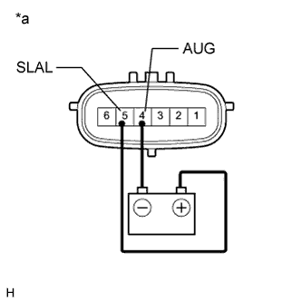
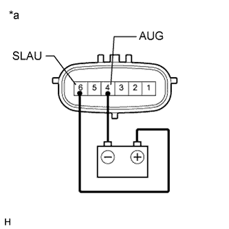

DTC C1851/51 Low Pressure Malfunction in Upside of KDSS System |
DTC C1853/53 High Pressure Malfunction in Upside of KDSS System |
| DTC Code | DTC Detection Condition | Trouble Area |
| C1851/51 | The sensor output is 0.9 MPa (9.2 kgf/cm2, 130 psi) or less for 5 min. continuously with the engine switch on (IG). |
|
| C1853/53 | The sensor output is 8.8 MPa (89.7 kgf/cm2, 1276 psi) or more for 20 sec. continuously with the engine switch on (IG). |
| 1.INSPECT FOR FLUID LEAK |
Inspect for fluid leaks (Click here).
|
| ||||
| OK | |
| 2.CHECK ANY OTHER DTCS OUTPUT (DTC C1812/12, C1831/31 AND/OR C1832/32) |
Check if DTC C1812/12, C1831/31 and/or C1832/32 is output (Click here).
| Result | Proceed to |
| No output | A |
| DTC C1812/12, C1831/31 and/or C1832/32 is output | B |
|
| ||||
| A | |
| 3.INSPECT STABILIZER CONTROL SOLENOID VALVE (CHECK IF VALVE STUCK) |
Disconnect the stabilizer control with accumulator housing assembly connector.
Check for an operating sound of the stabilizer control solenoid valve.
|  |
for Upper Chamber:
Connect terminal 5 (SLAL) to the positive (+) battery terminal, and terminal 4 (AUG) to the negative (-) battery terminal.
| *a | Component without harness connected (Stabilizer Control with Accumulator Housing Assembly) |
|  |
for Lower Chamber:
Connect terminal 6 (SLAU) to the positive (+) battery terminal, and terminal 4 (AUG) to the negative (-) battery terminal.
| *a | Component without harness connected (Stabilizer Control with Accumulator Housing Assembly) |
|
| ||||
| OK | |
| 4.INSPECT FOR CLOGS IN HYDRAULIC CIRCUIT |
Bleed air and check that the hydraulic circuit is not clogged (Click here).
|
| ||||
| OK | |
| 5.RECONFIRM DTC |
Clear the DTCs (Click here).
Check for DTCs (Click here).
| Result | Proceed to |
| DTC is not output | A |
| DTC is output | B |
|
| ||||
| A | ||
| ||